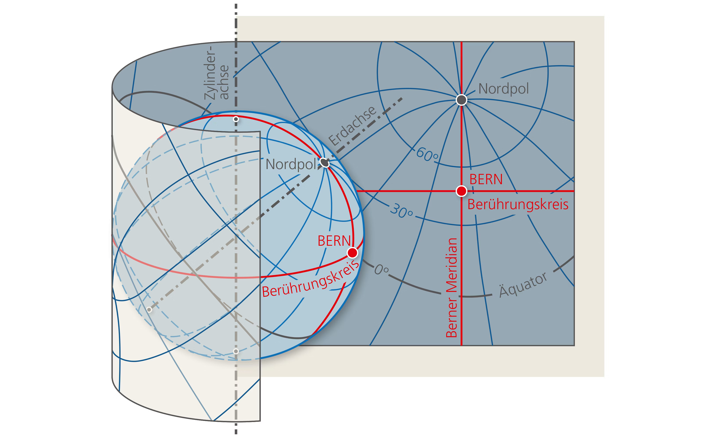
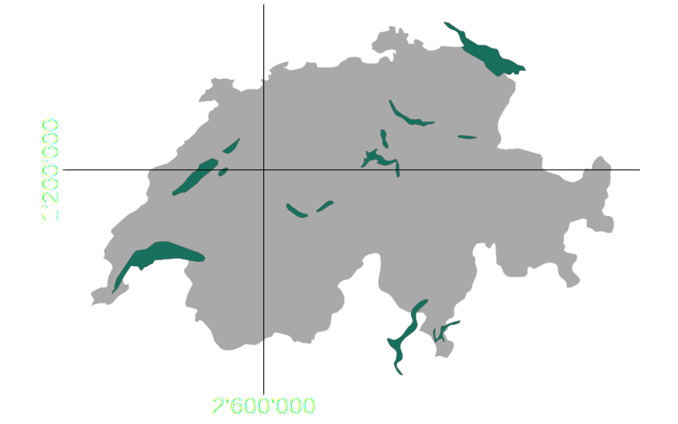
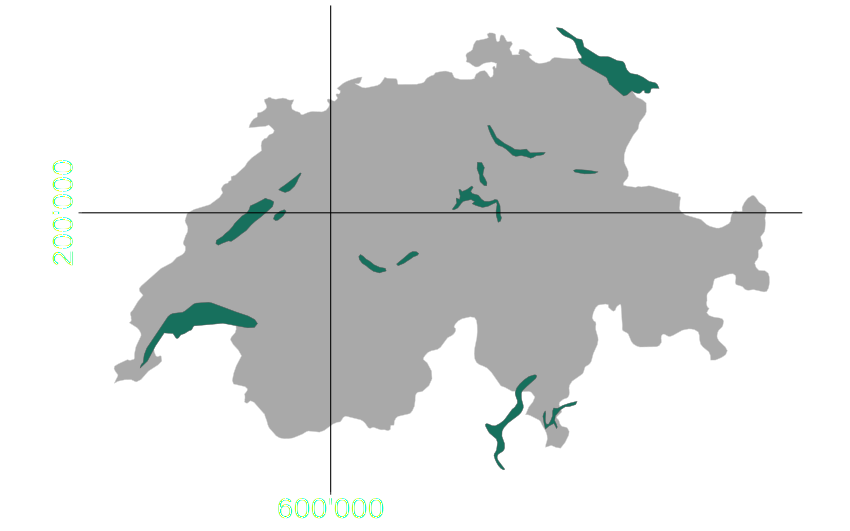
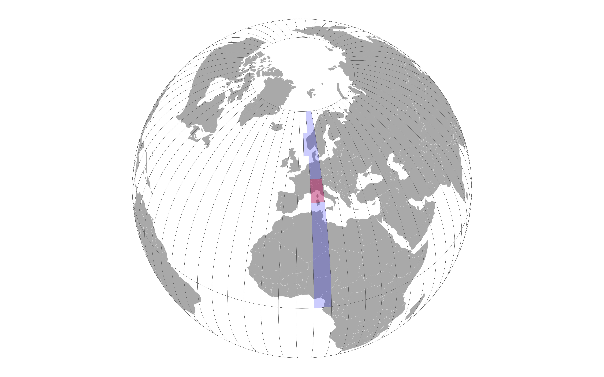

Introduction to QGIS

Nils Ratnaweera
ZHAW School of Life Sciences and Facility Management
Institute of Natural Resource Sciences
Grüentalstrasse 14
8820 Wädenswil
+41 (0) 58 934 55 63
rata@zhaw.ch
ZHAW School of Life Sciences and Facility Management
Institute of Natural Resource Sciences
Grüentalstrasse 14
8820 Wädenswil
+41 (0) 58 934 55 63
rata@zhaw.ch
Timetable
Lesson 1
Introduction and first steps
Raster and vector data
Lesson 2
Lesson 3
MCE and plugins in QGIS
Lesson 4
Sentinel data in QGIS
Inputs
(I talk)
Demos
(I show)
Exercises
(you do)
Workshops
(we do)
Why QGIS?
- Widely used and very popular
- Free and Open Source
- Cross-platform (Windows, MacOS & Linux)


- Free as in free beer
- Free as in free speech
The transition will be hard
..brace yourselves
How is QGIS different from ArcGIS?
An opinionated side by side comparison
ArcGIS 
QGIS 
Point of contact
Single
none / multiple
Community
Weak
Strong!
Concept
Seamless
Modular
Documentation
Excellent
Very technical
User Interface (UX)
State of the art
Outdated
Compliance w/ OGC
Poor
High
First steps in QGIS
Workshop: First contact with QGIS
Coordinate reference systems and projections
CH1903+ / LV95: 2'694'139.5, 1'230'462.0
CH1903 / LV03: 694'138.66, 230'462.17
WGS 84 (lat/lon): 47.21838, 8.68150
WGS 84 (lat/lon): 47°13'06.186 N 8°40'53.383 E
UTM: 475'884, 5'229'482 (zone 32T)
MGRS 32TMT: 75884 29482
what3words: opposing.vets.snoring

- They see the world as a sphere
- They use longitude and latitude
- They are useful for global data
- They are cumbersome for small-scale applications
- The most important is WGS84
EPSG
4326
West-East
-180 to +180
South-North
-90 to +90
West-East (CH)
5.9 - 10.4
South-North (CH)
45.8 - 47.8
CH1903+ / LV95: 2'694'139.5, 1'230'462.0
CH1903 / LV03: 694'138.66, 230'462.17
WGS 84 (lat/lon): 47.21838, 8.68150
WGS 84 (lat/lon): 47°13'06.186 N 8°40'53.383 E
UTM: 475'884, 5'229'482 (zone 32T)
MGRS 32TMT: 75884 29482
what3words: opposing.vets.snoring

- They abstract the world to a 2D-plane
- They use x/y or E/N coordinates
- They are useful for local (e.g. National) data
- Cannot be used for global data
- The most important (for us) are
CH1903+LV95andCH1903 LV03
EPSG
2056
West-East
2'400'000-2'800'000
South-North
1'100'000-1'300'000


EPSG
21781
West-East
400'000-800'000
South-North
100'000-300'000
CH1903+ / LV95: 2'694'139.5, 1'230'462.0
CH1903 / LV03: 694'138.66, 230'462.17
WGS 84 (lat/lon): 47.21838, 8.68150
WGS 84 (lat/lon): 47°13'06.186 N 8°40'53.383 E
UTM: 475'884, 5'229'482 (zone 32T)
MGRS 32TMT: 75884 29482
what3words: opposing.vets.snoring

EPSG
32632
West-East
166'000
-
834'000
South-North
0-9'330'000
West-East (CH)
270'000 - 607'000
South-North (CH)
5'000'000 - 5'300'000
Demo: CRS in QGIS
Demo: CRS in QGIS (continued)
Raster and vector data in QGIS

- a better alternative to the limited and proprietery formats shapefile and geodatabase
- can contain vector and raster data
- can contain multiple layers
Demo: Vector Data in QGIS
Exercise: Import the other vector datasets from the geopackage into QGIS
Demo: Raster data in QGIS
Exercise:
Import the raster datasets into QGIS and play around with symobology
Multicriteria analysis with QGIS
Exclusion areas
- Lakes
- Settlement areas
Areas of interest
- Low risk of icing
- Easy access (existing road and low gradient)


Exercise: Complete the MCA
| Class | Slope (Degrees) | Distance to Roads |
|---|---|---|
| 1 | >20 | >2'000 |
| 2 | 15-20 | 1'500-2'000 |
| 3 | 10-15 | 1'000-1'500 |
| 4 | 5-10 | 500-1'000 |
| 5 | 0-5 | 0-500 |
QGIS Plug-ins
- Vanilla QGIS is lightweight with limited features
- Additional features are developped by the community
- These features are implemented as "Plugins"
- These plugins are made available via a central repository
Demo: Installing QuickMapService Plugin
Exercise: Install the QuickMapService Plugin
Sentinel data in QGIS
Demo: Creating a true colour image from the red (4), green (3) and blue (2) bands
Exercise:
- Download sentinel data from Moodle
- Extract to reasonable location
- Create a QGIS Project in that same location
- Create an RGB image
- Optional: Create a NIR-GB image
... a simple indicator that can be used to analyse remote sensing measurements, assessing
whether or not the target being observed contains live green vegetation.


Workshop: Calculating NDVI
$\frac{\text{NIR}-\text{Red}}{\text{NIR}+\text{Red}}$